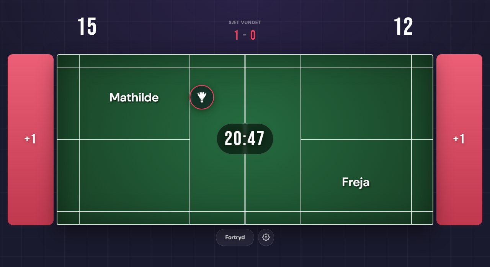
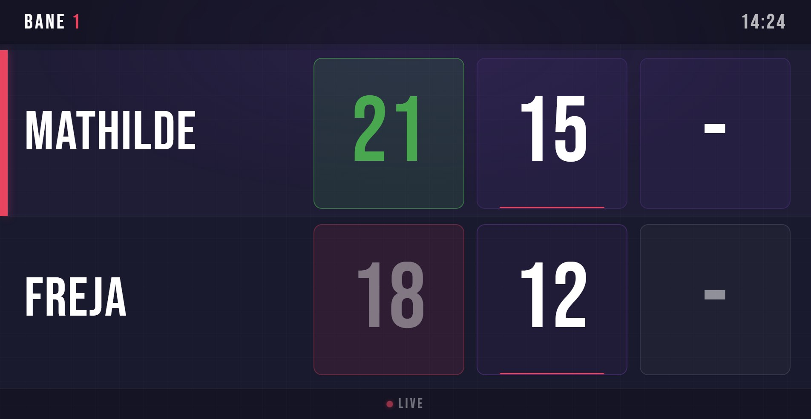
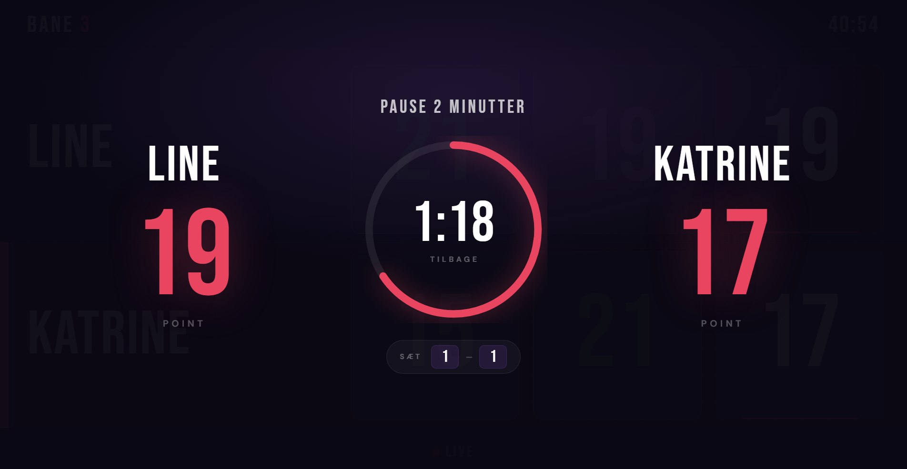
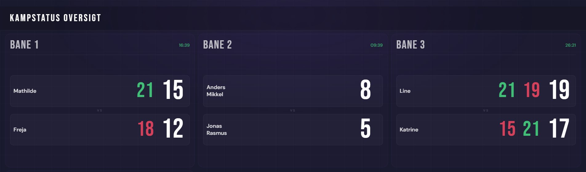

Tæl på tablet eller telefon, vis kampen live på TV og følg hele hallen på én skærm. Holdkamp, turnering og klubbens egne farver — alt samlet ét sted.

Alt opdateres i samme sekund, der tælles — på TV'et ved banen, på oversigtsskærmen og på tilskuernes telefoner.
Tilslut et TV til banen og vis stillingen sæt for sæt med spillernavne, klublogoer og servemarkering — læseligt fra den anden ende af hallen.
Når banen er ledig, skifter skærmen automatisk til klubbens sponsor-slideshow.

Efter hvert sæt viser TV'et automatisk en nedtælling med stillingen, så spillere og tilskuere altid ved, hvornår næste sæt går i gang.
Tælleren fortsætter selv kampen, når pausen er slut — eller når spillerne springer den over.

Hæng en skærm op i foyeren og vis alle baners kampe live — med sætstillinger og kamptid. Under holdkampe ruller oversigten automatisk gennem delkampene.

Point opdateres øjeblikkeligt på alle enheder — tablet, telefon og storskærm — uden genindlæsning.
Korrekt servetæller, spillerplacering og automatisk sideskift — også i tredje sæt. Reglerne passer sig selv.
Scan QR-koden på TV-skærmen og tæl kampen direkte fra din egen telefon. Ingen app, intet login.
Et forkert tryk er aldrig et problem — fortryd-knappen ruller point, server og sideskift tilbage, skridt for skridt.
Lås tælleren under stævner, så knapper til nulstilling og opsætning er skjult for spillerne.
Kamptimeren kører på serverens ur, så TV, oversigt og tæller altid viser præcis samme tid.
Opret holdkampe i alle gængse formater — eller hent dem direkte fra badmintonplayer.dk. Fordel delkampene på banerne og følg med i realtid.
Importer stævnekampe fra tournamentsoftware.com og send dem ud på banerne — uden at taste ét navn selv.
Opret spillere manuelt eller importer fra turneringsprogrammet. Klublogoer matches automatisk på navnet.
Alle kampe gemmes automatisk — enkeltkampe, holdkampe og stævner kan søges frem med resultater og kamptid.
Vælg mellem seks færdige temaer eller sammensæt jeres egne klubfarver — de slår igennem på tæller, TV og oversigt.
Upload sponsorernes logoer og styr, hvornår de vises på TV-skærmene — med visningstid og udløbsdato pr. billede.
Giv tablets og TV-skærme deres egne links uden admin-adgang — låst til en bestemt bane, hvis I vil.
Opret logins til trænere og frivillige, og bestem hvem der har adgang til hvad — fra sponsorer til indstillinger.
Vi hoster løsningen for jer — klubben skal hverken have server eller IT-udvalg.
I får jeresklub.badmintonapp.dk med eget login, egne data og klubbens farver og logo.
Åbn tælleren på en tablet og TV-visningen på storskærmen — så er I klar til første kamp.
Løsningen er gratis at bruge, hvis I kører den på jeres egen server. Ønsker I fuld funktionalitet, skal I oprettes på vores centrale løsning. Vi hjælper også gerne med installation og valg af hardware — skriv til os.
Demoen kører i browseren — ingen oprettelse, ingen installation.
Spørgsmål? Skriv til os på info@badmintonapp.dk